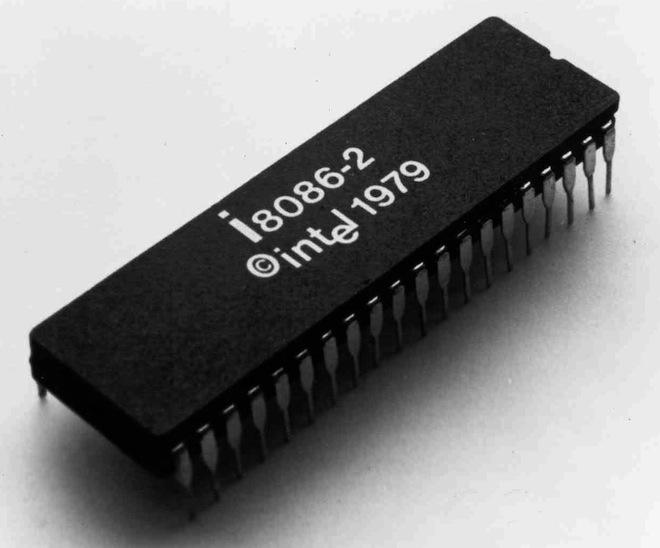
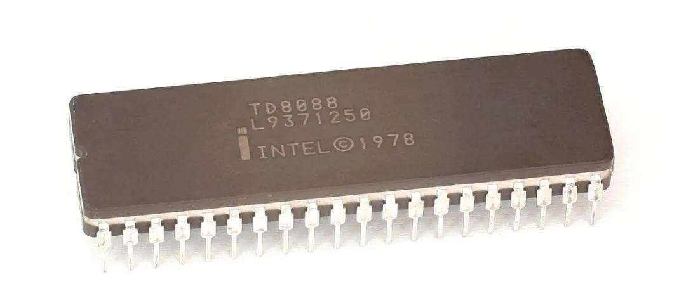

世界上第一款可用于微型计算机的4位处理器，是英特尔公司于1971年推出的包含了2300个晶体管的4004。由于性能很差，市场反应十分冷淡。 于是Intel公司随后又研制出了8080处理器、8085处理器，加上当时Motorola公司的MC6800微处理器和Zilog公司的Z80微处理器，一起组成了8位微处理器的家族。

CPU是Central Processing Unit（中央微处理器）的缩写，由运算器和控制器两部分组成，按照其处理信息的字长，CPU可以分为：4位微处理器、8位微处理器、16位微处理器、32位微处理器以及正在走红的64位微处理器。
世界上第一款可用于微型计算机的4位处理器，是英特尔公司于1971年推出的包含了2300个晶体管的4004。由于性能很差，市场反应十分冷淡。 于是Intel公司随后又研制出了8080处理器、8085处理器，加上当时Motorola公司的MC6800微处理器和Zilog公司的Z80微处理器，一起组成了8位微处理器的家族。
这期间的代表是英特尔公司1978年推出的这款8086处理器，它是第一块16位微处理器，最高主频为8MHz，内存寻址能力为1MB。同时英特尔还生产出与之相配合的数学协处理器8087,这两种芯片使用相互兼容的指令集，但i8087指令集中增加了一些专门用于对数、指数和三角函数等数学计算的指令，人们将这些指令集统一称之为 x86指令集。虽然以后英特尔又陆续生产出第二代、第三代等更先进和更快的新型CPU，但都仍然兼容原来的x86指令。从这点上来说，虽然用今天的眼光看来，8086的性能是那么的不堪，但是它的诞生却奠定了以后CPU发展的基础。
1979年，英特尔公司再接再厉，又开发出了8088。8088集成了约29000个晶体管，采用40针的DIP封装，最高频率为8MHz。 也正是从8088开始，PC（个人电脑）的概念开始在全世界范围内发展起来，因为1981年IBM公司将8088芯片首先用于其研制的PC机中，标志着PC真正走进了人们的工作生活之中。
1982年，英特尔公司在8086的基础上，研制出了80286微处理器，它 是一颗真正为PC而存在的CPU，IBM公司将80286微处理器首先用在AT机中，引起了业界了极大的轰动。80286 采用PGA封装，集成了大约130000个晶体管，最大主频为20MHz，内、外部数据传输均为16位，使用24位内存储器的寻址，内存寻址能力为16MB，可使用的工作方式包括实模式和保护模式两种。在这之前， INTEL也发布过80186 CPU，这是一颗性能介于8088，80286之间的的CPU，但因为某种原因，80186从来都没有在PC中应用过。
计算机发展史
图形处理器（GPU）发展史